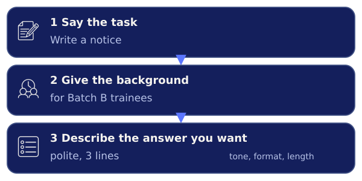
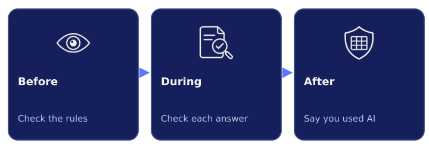
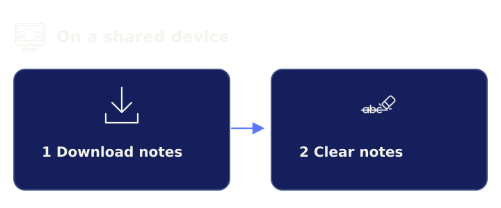

Use these free links to learn more about AI.
Everything here is optional. The links go to other websites, so read these 3 rules first.
Your task. Tap each card to read the rule.
Answer 3 questions to find your best links.
There are 18 free resources here. You do not need all of them.
Your task. Tap 1 answer in each row, then tap Show my picks.
These 2 guides help you write better prompts.
A prompt is what you type to ask an AI tool. Each guide takes about 10 minutes.

Your task. Tap Key points on a guide, then tap Open to read it.
These 2 links help you go further with prompts.
The course is for college students. The second link is an optional extra for advanced learners.
Your task. Tap Key points to see if a link is right for you.
AI tools make mistakes, so learn to check them.
In Watch It Get It Wrong, you saw an AI tool make things up. These guides show the mistakes to expect and how to check for them.
Your task. Tap Key points on a guide, then tap Open to read it.
Use a checklist and clear rules when you use AI.
The checklist is for college students. The short guide is for everyone.

Your task. Tap Key points to see what each link teaches.
Never type private details into an AI tool.
The course asks you to keep personal and secret details out of AI tools. These 2 links from governments explain why.
Keep these out of AIPhoneID cardAadhaarAddressHealthPasswordMarks
Your task. Tap Key points on an advisory, then tap Open to read it.
AI companies may keep and use your chats.
This article compares 6 big AI companies. It shows what they do with your chats.
Your task. Tap Key points, then tap Open to read the article.
Learn why AI answers the way it does.
Start with these 2 short reads. Then pick 1 course if you want more.
Your task. Tap Key points on a read, then tap Open to read it.
These 2 free courses come from the Government of India.
The video course takes about 4.5 hours, in parts. SOAR is a good next step for ITI learners.
Your task. Tap Key points to see what each course covers.
These 2 courses show how to work well with AI.
Take the capabilities course first. The AI Fluency course is an optional extra.
Your task. Tap Key points to see what each course covers.
Researchers can now look inside an AI model.
This article is an optional extra for advanced learners. It takes about 15 minutes.
Your task. Tap Key points, then tap Open if you want to read it.
Your notes are saved in My AI toolkit.
Your notes stay on this device only. On a shared device, download them and then clear them.

Your task. Tap Download notes to keep a copy of your notes.
No notes yet. Tap Key points on any link and write 1 thing you will try.